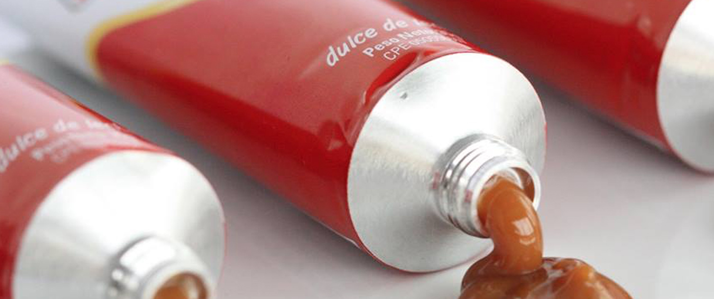
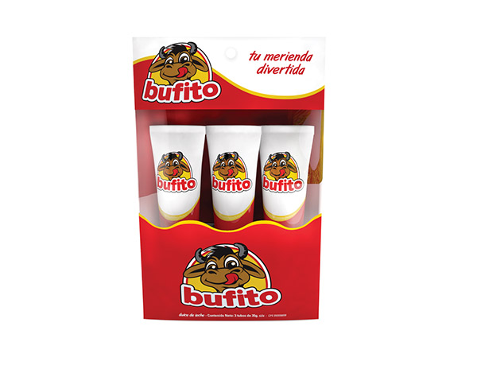
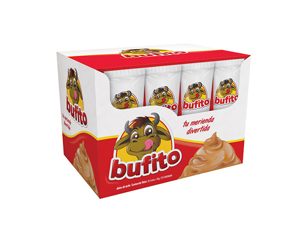
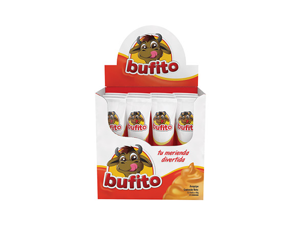
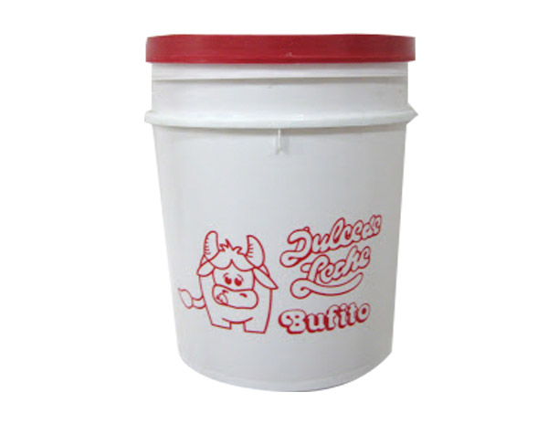
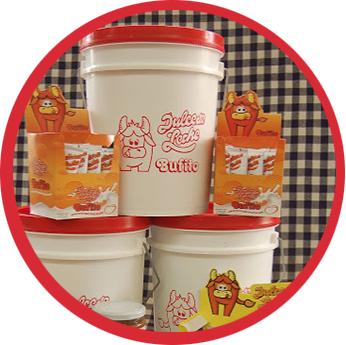

Quienes somos
Bulfito es un dulce de leche de búfala, fabricado con cariño, es 100% natural y nutritivo.
Nació en el Hato La Guanota, en San Fernando de Apure en el año 1985, desde entonces se ha conservado la receta original. Sirve para acompañarlo con tortas, helados, galletas, obleas y café; aunque la gran mayoría prefiere degustarlo puro por su exquisito sabor y no empalaga.
Es tan nutritivo como un vaso con leche, lo que lo convierte más que una simple golosina, en un alimento divertido, el cual puedes degustar en frascos y en tubitos. La inspiración para el nombre Bufito surge cuando un amigo chino decía que queria dos Bufitos, haciendo referencia a dos bucerritos (búfalos recién nacidos).
Productos

Tubito de 35g

Tripack

Display
Display
de 24 unidades

Display
Display
de 12 unidades

Frasco de 250g

Cuñete de 5Kg
Contactos
ventas@bifito.com
info@bufito.com
bufito
@bufito
@bufito
Referencias Gastronómicas
